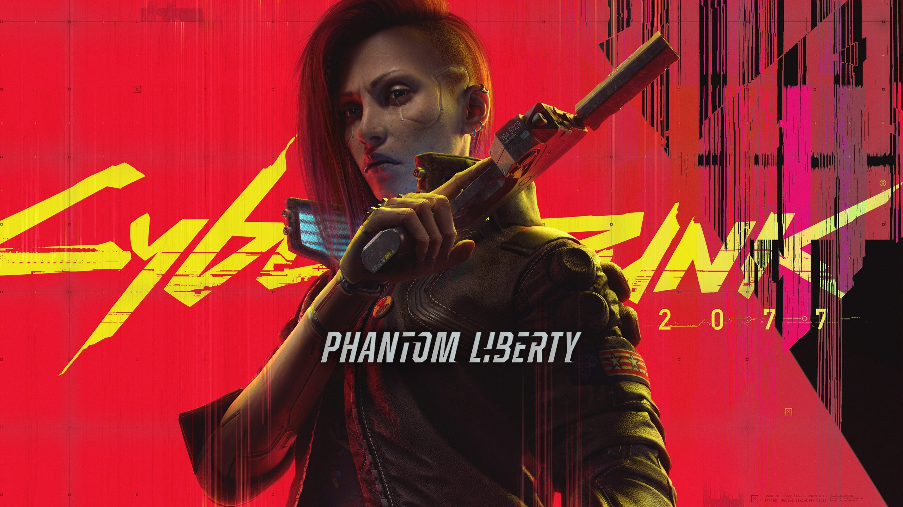
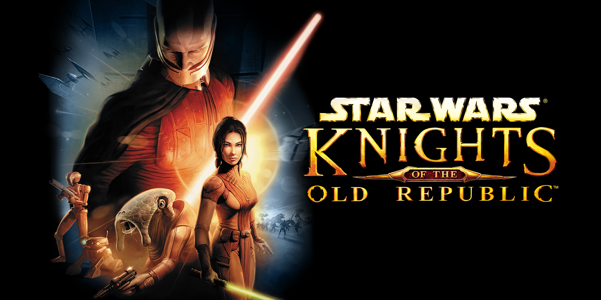

Story Games
Ik heb dit genre op de website gezet om een heel algemene term te maken zodat ik nog paar left overs erin kan doen die niet in de vorige genres passen. Ik vind dat story games games zijn die veel focussen op het plot, vaak ook singleplayer zonder alle multiplayer functies die veel games hebben. Ik speel vooral singleplayer games met story, dus opzich kunnen veel games die ik heb gespeeld in deze categorie. Hier dus 3 die ik bijzonder goed vond.
Cyberpunk 2077
Dit spel staat een beetje bekend voor de superslechte launch in 2020. De developers gaven alleen niet op na deze launch, en brachten continue updates uit om het spel beter en beter te maken. ik vond het spel al enjoyable eerst maar het werd dus steeds leuker.
Ongeveer 1 jaar geleden kwam de anime serie Cyberpunk: Edgerunners uit, en deze serie boostte de populariteit van het spel enorm. Dit was het beste 3rde kwartaal voor de makers van cyberpunk in de gehele historie van het bedrijf volgens PC gamer. Kort na dit grote succes kondigden ze een expansion aan, die op het moment van schrijven in 2 dagen uitkomt. Ik ben enorm excited hiervoor, en wacht er echt al maanden op. Met een nieuwe acteur: Idris Elba, die gaat spelen in de game naast natuurlijk keanu reeves, Word dit zoizo een zieke experience.
Star wars: Knights of the old republic.
Dit is een redelijk oud spel uitgebracht in 2003. Het is een star wars game, maar de twist is dat het niet afspeelt tijdens de films maar een compleet nieuwe era ingaat. De game speelt zich ongeveer 4000 jaar voor de films af. Dit is niet de enige content in deze periode. Star Wars heeft ook een mmo uitgebrach in deze tijd. Dit is mijn meest gespeelde steam spel op mijn account met 400 uur op de timer.
Knights of the old republic, ofterwel KOTOR staat bekend op de story. Het heeft een zeer grote plottwist in het midden van de game. Ook heeft het veel populaire characters wat de game ontzettend populair maaktte. De gameplay is nu een beetje outdated, maar opzich is dit nog een heel leuk spel om te spelen in 2023.
A Space for the Unbound
Dit is een redelijk nieuw spel wat nog dit jaar uitkwam. Het is een best wel hidden gem vind ik. De story begint heel innocent en eigenlijk volet het gewoon alsof het een soort van daily life story word. Maar al snel lijkt het erop dat dingen mis gaan, en hoe het verder gaat verklap ik niet. De areas zien er heel leuk uit met de pixel stijl, en er zijn veel momenten die echt screenshotwaardig zijn.
De cast van characters zijn allemaal likeable vond ik. De steam archievements waren leuk om te hunten. Er was bijvoorbeeld een soort van fighter game arcade minigame waar je een bepaalde score moest halen. Dat soort kleine dingen waardeer ik altijd. De muziek in het spel was ook zeer goed.